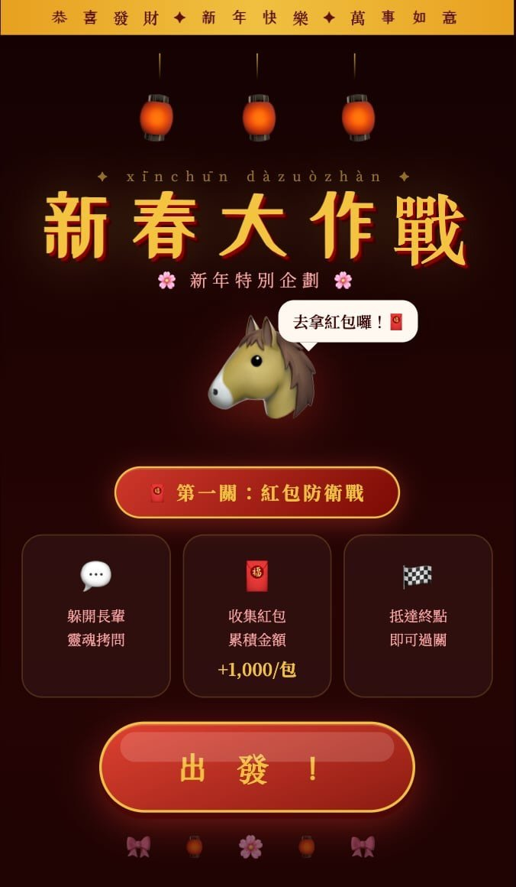

Overview
Lunar New Year Challenge (新春大作戰) is a three-stage mobile web game that transforms traditional Chinese New Year cultural elements — red envelopes, lottery tickets, and firecrackers — into playable game mechanics. The entire game runs as a single HTML file in any mobile browser, requiring zero installation. The goal was simple: build something fun enough to share with family and friends during the holiday season, while celebrating the cultural traditions that make Lunar New Year special.

Why I Built This
I wanted to explore whether a complete, polished mobile game could be built entirely through human-AI collaboration — with me providing the creative direction and gameplay feedback, and Claude handling all the technical implementation. Lunar New Year felt like the perfect theme: it's culturally rich, visually vibrant, and inherently social. Instead of just another greeting card app, I wanted to create something people would actually play.
The Three Stages
Each stage introduces a completely different gameplay type, keeping players engaged through variety rather than repetition.
Stage 1 — Red Envelope Defense: Players control a horse character (a nod to the Chinese zodiac) and catch red envelopes falling from the sky while dodging obstacles. It's a classic action format built around an HP system, collision detection, and touch controls — designed to feel snappy and satisfying on a phone screen.
Stage 2 — New Year Lottery: A memory-based challenge where players must remember and collect the correct number combinations. This one plays on the "scratch card" atmosphere of the holiday season, testing short-term memory instead of reflexes.
Stage 3 — Firecracker Frenzy: A survival mode where players dodge waves of firecrackers with varying trajectories and blast patterns. The longer you survive, the more intense it gets — multiple explosion types keep the visuals fresh even in extended sessions.
Between stages, animated transition screens and firework particle effects give the game a complete, polished feel — not just three mini-games stitched together, but a cohesive experience from start to finish.
How AI Was Used
This project was built entirely through conversation with Claude. The collaboration model worked like this: I described what I wanted a stage to feel like, Claude produced a fully functional implementation, I playtested it on my phone, and then I fed back specific observations — "the red envelopes fall too fast," "the win button is too easy to miss-tap," "the explosions feel repetitive after 30 seconds." Claude would then adjust parameters, restructure UI elements, or add visual variety based on that feedback.
What made this work wasn't just code generation — it was the iterative loop. Claude built the entire Canvas game engine from scratch, including the game loop, state machine, collision system, particle effects, and multi-layer canvas rendering. But the quality of the game came from dozens of test-and-refine cycles where I translated subjective gameplay feel into concrete change requests.
Key Design Decisions
Memory games need real memory pressure. The first version of Stage 2 displayed the target numbers on screen the entire time — which completely defeated the purpose. Removing the persistent hint was an obvious fix in hindsight, but it reinforced an important principle: the core tension of a memory game is "can you remember it?" Anything that undermines that tension undermines the entire mechanic.
Primary actions must look primary. After clearing a stage, the "Next Stage" and "Retry" buttons were originally the same size and prominence. During playtesting, I kept accidentally hitting "Retry" right after winning — turning a moment of triumph into frustration. The fix was straightforward: make "Next Stage" visually dominant and demote "Retry" to a secondary style. It's a basic UX principle, but one you only truly internalize when you feel the pain yourself.
Difficulty curves can't be designed on paper. Both Stage 1 and Stage 3 involve objects spawning continuously. Too fast and the player is overwhelmed instantly; too slow and it's boring. Finding the sweet spot — "consistently tense but never hopeless" — required playing the game over and over and nudging spawn rates by small increments. No amount of theoretical planning could have replaced that hands-on tuning.
Visual repetition kills spectacle. Stage 3's explosions initially used a single animation pattern. It looked impressive for the first few seconds, then became wallpaper. Adding multiple explosion styles and particle variations solved this — the same mechanic felt dramatically more engaging simply because each detonation looked slightly different.
Tech Stack
The game is a single HTML file using HTML5 Canvas for rendering, vanilla JavaScript for game logic and state management, CSS3 animations for UI transitions, the Touch Events API for mobile controls, multi-canvas layering for visual depth (firework effects rendered on separate layers), and a custom particle system for all explosion and celebration effects. No frameworks, no build tools, no dependencies — just one file you can open in a browser and play.
Reflections
The biggest takeaway from this project isn't technical — it's about the collaboration model. Building a game through conversation with an AI inverts the traditional workflow. Instead of writing code and then testing, I was playing and then describing. The hardest part was articulating "game feel" — an inherently fuzzy concept — precisely enough for Claude to translate it into parameter changes. Saying "it feels too hard" isn't useful. Saying "enemies spawn every 0.8 seconds and I can't physically move my thumb fast enough to dodge them all" is.
The cultural elements weren't just a skin. Red envelopes, lottery, and firecrackers each naturally map to a different game genre (action, puzzle, survival), which meant the theme actually drove gameplay variety rather than just decorating it. That was a happy discovery — the best design decisions often come from constraints rather than from open-ended brainstorming.
If I were to do it again, I'd add a scoring system that persists across all three stages and some form of social sharing — a screenshot or short animation players could send to friends. The game was built to be shared, and making that sharing frictionless would have completed the loop.